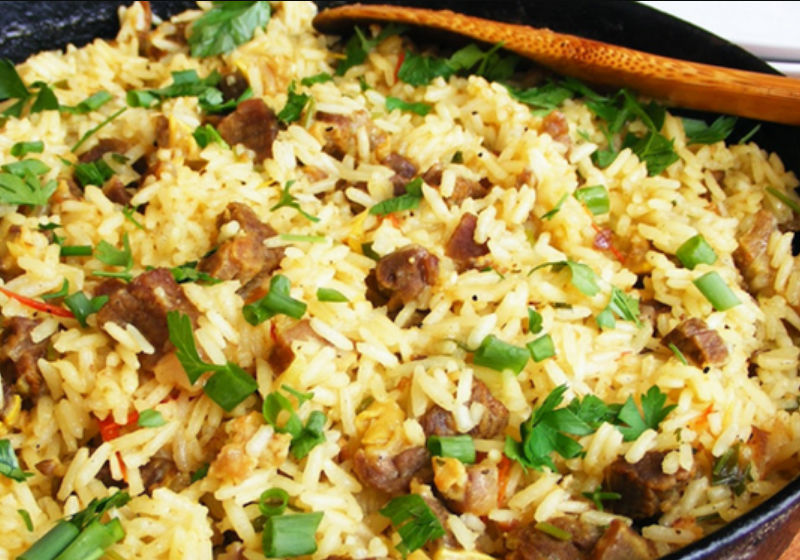
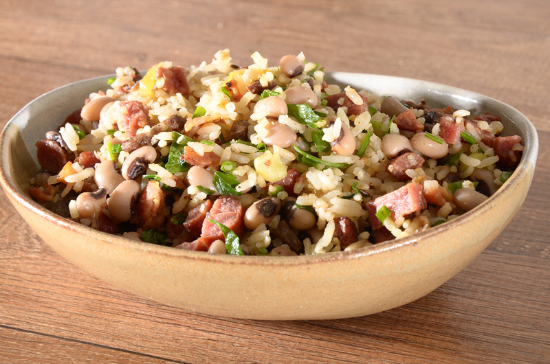

Gastronomia
Pratos típicos que você precisa saborear no Chalé hotel

Acarajé
Esse prato traduz o sentimento do povo baiano, uma mistura incrível de sabores que apresentam a identidade de uma terra espetacular. O acarajé é uma especialidade gastronômica da culinária afro-brasileira feita de massa de feijão-fradinho, cebola e sal, frita em azeite-de-dendê e pode ser servido com pimenta, camarão seco, vatapá, caruru ou salada, componentes e pratos típicos, em sua grande maioria, da cozinha local.
Maria Isabel
Maria Isabel é o prato mais representativo da cozinha piauiense, todos os ingredientes são tipicamente regionais, a base de arroz, carne seca, cebola, pimentão, cheiro verde, alho e pimenta-do-reino. Segundo a história contada pelo povo, antigamente só os homens comiam carne seca e no meio das famílias carentes, uma mãe que não tinha o que dar para os filhos, cortou em cubos uma pontinha da carne do pai e fez o prato para toda a família, e batizou assim com o nome das suas filhas, Maria e Isabel.
Baião de Dois
Com certeza essa é uma das iguarias mais pedidas no nordeste. Desde seu surgimento no Ceará, o prato conquistou o restante da região e encanta cada vez mais os viajantes. No nordeste não faltam comidas boas, então, o baião de dois feito com leite de coco forma uma ótima combinação junto a paçoca de carne seca ou com qualquer outro prato.